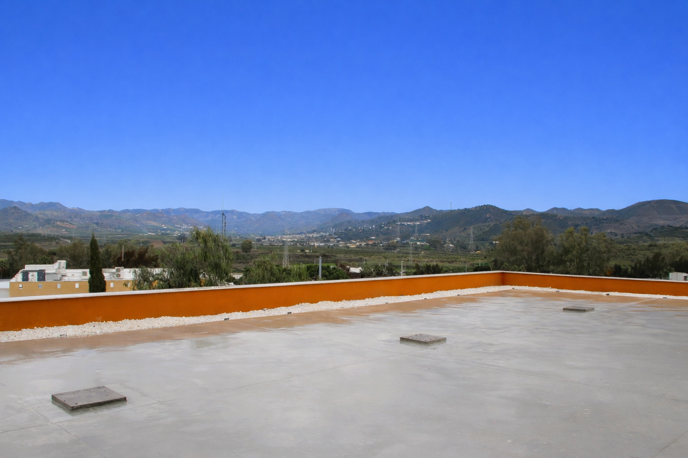
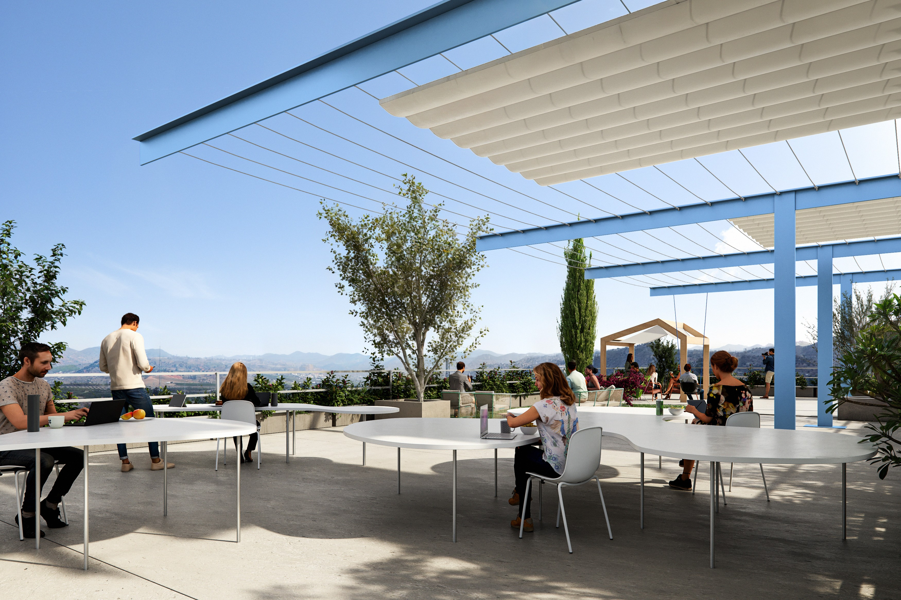

Trabajar al aire libre forma parte de la experiencia MC8
El proyecto incorpora espacios exteriores de alto valor añadido que amplían la oficina más allá de sus límites tradicionales. Jardines y terrazas se integran como espacios de trabajo, encuentro y descanso


Terraza principal
- 600–700 m² de terraza en cubierta
- Vistas abiertas a los Montes de Málaga
- Espacio ideal para eventos, reuniones informales o trabajo outdoor
Jardines y zonas exteriores
- Zonas ajardinadas en planta primera
- Relación directa interior–exterior
- Luz natural y ventilación como elementos centrales del diseño
Valor para la empresa
- Mejora del bienestar y la productividad
- Atractivo para captación y retención de talento
- Refuerzo de cultura corporativa y employer branding